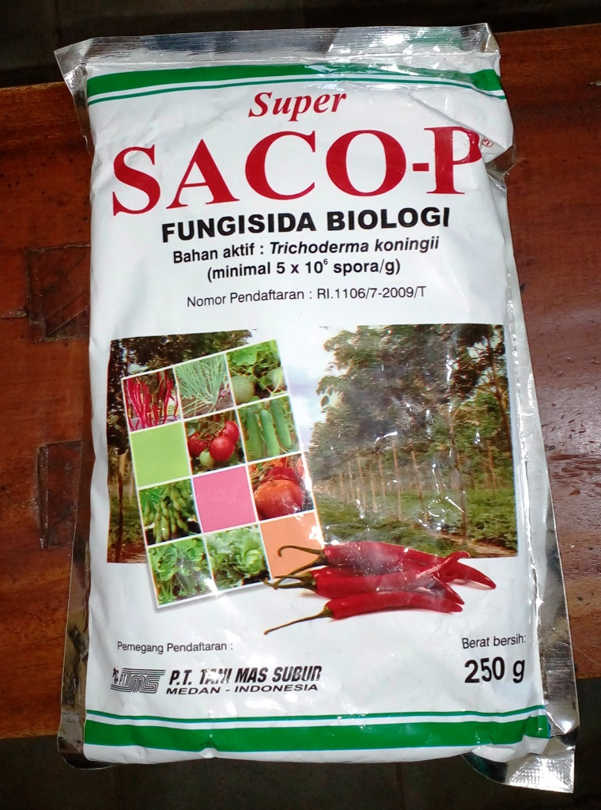

Fungisida Organik Biologi Super SACO-P
Description :

Bahan Aktif :
Trichoderma koningii (minimal 5×10 pangkat 6 spora/gram),
Untuk mengendalikan penyakit akar putih pada tanaman karet dan
layu fusarium pada cabai.

Cara Aplikasi :
1. Buat larutan semprot saco-p dengan dosis 3-5 gram/liter air.
2. Semprot ke seluruh bagian tanaman dan sekeliling leher akar tanaman
yang terserang penyakit.
volume semprot 500 liter untuk 1 hektar.
Pada saat pindah tanam untuk pencegahan atau apabila ditemukan
tanda-tanda serangan penyakit. Tanaman cabai serangan ditandai
dengan memucatnya tulang daun sebelah atas dan diikuti menunduknya tangkai daun.
Jika pada bagian atas antara akar dan batang dipotong akan terlihat
cincin cokelat kehitaman diikuti busuk basah pada berkas pembuluh.